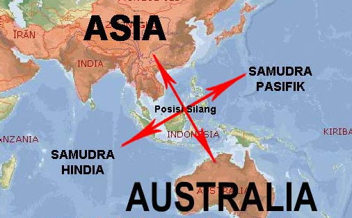
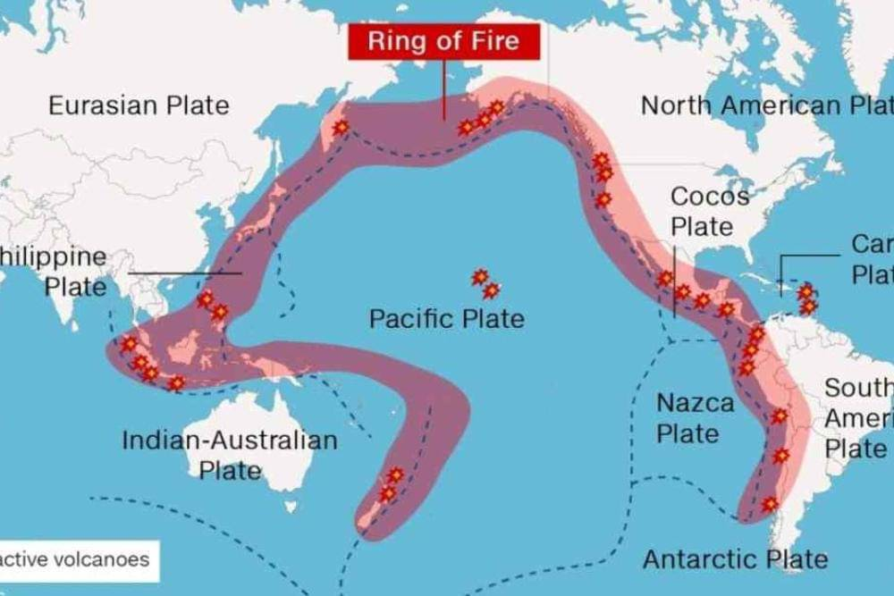
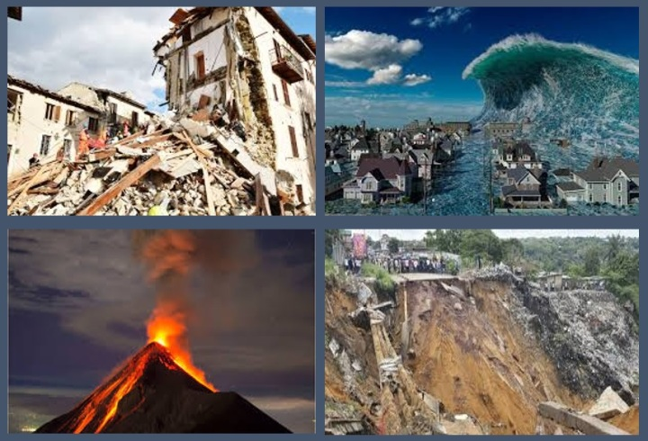

Bab 5: Keruangan dan Konektivitas Antarruang dan Antarwaktu
A. Konsep Dasar Ruang dan Konektivitas
a. Pengantar
Kehidupan manusia tidak bisa dipisahkan dari ruang tempat ia berada. Setiap aktivitas—bertani, berdagang, bekerja, belajar, atau berwisata—selalu berlangsung di ruang tertentu, dan ruang itu saling berhubungan dengan ruang lain. Bayangkan sebuah desa kecil yang dikelilingi sawah dan sungai. Setiap pagi, truk berisi hasil panen menuju pasar kota, sementara dari arah sebaliknya datang pupuk, bahan bakar, dan barang kebutuhan rumah tangga. Desa dan kota saling bergantung; hubungan timbal balik inilah yang disebut konektivitas antarruang.
b. Pengertian Ruang
Dalam ilmu sosial dan geografi, ruang adalah tempat di permukaan bumi yang menjadi wadah kehidupan manusia dan makhluk hidup. Ruang bisa bersifat fisik, seperti rumah, sekolah, sawah, gunung, sungai, atau jalan raya; dan bisa juga sosial, seperti jaringan kerja, pasar, atau sistem informasi yang menghubungkan orang dan kegiatan ekonomi. Setiap ruang memiliki fungsi dan peran berbeda, tetapi saling bergantung.

Letakkan file gambar dengan nama "gambar1" di folder "s1-bab-5"
c. Konektivitas Antarruang
Konektivitas berarti hubungan dan keterkaitan antarwilayah. Beberapa bentuk konektivitas yang umum dijumpai:
- Konektivitas fisik, seperti jalan, jembatan, sungai, pelabuhan, dan jalur udara.
- Konektivitas ekonomi, berupa kegiatan distribusi dan perdagangan antarwilayah.
- Konektivitas sosial-budaya, muncul dari perpindahan manusia dan pertukaran budaya.
- Konektivitas digital, tumbuh karena perkembangan internet dan teknologi komunikasi.
Refleksi A
- Apa contoh konektivitas antara tempat tinggalmu dan wilayah lain di sekitarnya?
- Barang, informasi, atau kebiasaan apa yang paling sering berpindah dari daerahmu ke daerah lain?
- Apakah ada perubahan besar sejak dibangun jalan baru, jembatan, atau sinyal internet semakin kuat?
B. Kondisi Geografis Indonesia
a. Ciri Umum Letak dan Kondisi Indonesia
Indonesia merupakan negara kepulauan terbesar di dunia dengan lebih dari 17.000 pulau yang terbentang di antara dua benua (Asia dan Australia) dan dua samudra (Hindia dan Pasifik). Letak yang strategis ini menyebabkan Indonesia menjadi titik pertemuan berbagai jalur perdagangan, budaya, dan iklim dunia.

Letakkan file gambar dengan nama "gambar2" di folder "s1-bab-5"
b. Struktur Fisik dan Lapisan Bumi Indonesia
Secara geologis, wilayah Indonesia berada di pertemuan tiga lempeng besar: Eurasia, Indo-Australia, dan Pasifik. Akibatnya, terbentuklah banyak gunung api, lembah, serta patahan bumi yang membuat tanah Indonesia subur tetapi juga rawan gempa.

Letakkan file gambar dengan nama "gambar3" di folder "s1-bab-5"
c. Persebaran Wilayah dan Aktivitas Sosial Ekonomi
| Wilayah | Ciri Utama | Aktivitas Ekonomi Dominan |
|---|---|---|
| Pesisir | Banyak pelabuhan, masyarakat bergantung pada laut | Perikanan, perdagangan, transportasi laut |
| Dataran Rendah | Tanah subur, dekat sungai dan kota | Pertanian, industri kecil, jasa |
| Dataran Tinggi | Suhu sejuk, cocok untuk tanaman sayur dan teh | Pertanian hortikultura, wisata alam |
| Kepulauan Terpencil | Akses terbatas, sumber daya melimpah | Perikanan tradisional, kerajinan lokal |
| Perkotaan | Penduduk padat, pusat kegiatan ekonomi dan teknologi | Industri, perdagangan, layanan digital |
C. Potensi Sumber Daya Alam dan Pengelolaannya
a. Ragam Sumber Daya Alam di Indonesia
Indonesia dikenal sebagai negara yang sangat kaya sumber daya alam (SDA). Hal ini dipengaruhi oleh kondisi geografis, geologis, dan iklim tropis yang mendukung keberagaman hayati serta hasil bumi.

Letakkan file gambar dengan nama "gambar4" di folder "s1-bab-5"
b. Persebaran Sumber Daya Alam
| Wilayah | Jenis SDA Utama | Contoh Daerah Penghasil |
|---|---|---|
| Sumatra | Minyak bumi, gas alam, perkebunan sawit, karet | Riau, Aceh, Sumatera Selatan |
| Jawa | Pertanian, industri, perikanan laut | Jawa Barat, Jawa Timur |
| Kalimantan | Hutan tropis, batu bara, emas | Kalimantan Timur, Tengah |
| Sulawesi | Nikel, kelapa, perikanan | Sulawesi Tengah, Tenggara |
| Papua | Emas, tembaga, hutan hujan tropis | Papua Tengah, Papua Barat |
| Nusa Tenggara | Peternakan, garam, pariwisata alam | NTB, NTT |
D. Dinamika Ruang, Kependudukan, dan Aktivitas Sosial–Ekonomi
a. Konsep Dinamika Ruang
Ruang tidak hanya sekadar wilayah di peta, tetapi tempat berlangsungnya berbagai aktivitas manusia dan interaksi dengan lingkungan. Dalam konteks geografi, ruang bersifat dinamis, artinya terus berubah karena adanya aktivitas sosial, ekonomi, politik, dan alam.

Letakkan file gambar dengan nama "gambar5" di folder "s1-bab-5"
E. Mitigasi dan Adaptasi Bencana dalam Konteks Keruangan
a. Pengantar: Indonesia sebagai Negara Rawan Bencana
Indonesia dikenal sebagai salah satu negara dengan risiko bencana alam tertinggi di dunia. Letaknya di pertemuan tiga lempeng besar — Eurasia, Indo-Australia, dan Pasifik — menjadikan wilayah ini rawan gempa bumi, letusan gunung api, dan tsunami.

Letakkan file gambar dengan nama "gambar6" di folder "s1-bab-5"
b. Jenis-Jenis Bencana Berdasarkan Faktor Penyebabnya
1. Bencana Geologis
- Gempa bumi: pergerakan lempeng tektonik yang menyebabkan getaran tanah.
- Tsunami: gelombang besar akibat gempa di dasar laut.
- Letusan gunung api: keluarnya magma dan gas dari perut bumi.
2. Bencana Hidrometeorologis
- Banjir: curah hujan tinggi, drainase buruk, atau penebangan hutan.
- Tanah longsor: lereng curam dan vegetasi yang rusak.
- Kekeringan: perubahan pola curah hujan dan degradasi lahan.

Letakkan file gambar dengan nama "gambar7" di folder "s1-bab-5"
c. Konsep Mitigasi dan Adaptasi
| Konsep | Pengertian | Contoh Tindakan |
|---|---|---|
| Mitigasi | Upaya mengurangi dampak bencana sebelum terjadi. | - Membangun rumah tahan gempa - Menanam pohon di lereng gunung - Pemetaan daerah rawan bencana |
| Adaptasi | Upaya menyesuaikan diri terhadap dampak bencana yang tidak bisa dihindari. | - Membuat sistem peringatan dini - Mengubah pola tanam sesuai musim - Relokasi penduduk dari daerah rawan |
d. Keterkaitan dengan Bidang Keahlian di SMK
1. Jurusan ATPH (Agribisnis Tanaman Pangan dan Hortikultura)
Relevansi:
- Menganalisis peta agroklimat untuk menentukan waktu tanam dan pola rotasi tanaman.
- Menyesuaikan teknik irigasi berdasarkan kondisi topografi dan curah hujan.
- Menerapkan adaptasi pertanian berkelanjutan, misalnya menanam tanaman penahan erosi di lereng curam.
2. Jurusan TSM (Teknik dan Bisnis Sepeda Motor)
Relevansi:
- Menentukan bahan pelindung kendaraan yang tahan terhadap cuaca ekstrem.
- Mengatur ventilasi dan sistem kerja bengkel agar tetap aman dan efisien di lingkungan tropis.
- Berperan dalam proyek sosial mitigasi, misalnya pembuatan alat deteksi banjir sederhana dari sensor air.
3. Jurusan AKL (Akuntansi dan Keuangan Lembaga)
Relevansi:
- Membuat laporan biaya mitigasi dan bantuan secara akurat dan terstruktur.
- Menghitung efisiensi penggunaan dana proyek lingkungan.
- Membantu sekolah atau komunitas dalam pencatatan donasi dan logistik saat terjadi bencana.
4. Jurusan TKJ (Teknik Komputer dan Jaringan)
Relevansi:
- Mendesain sistem informasi geografis sederhana (SIG) untuk memantau risiko bencana.
- Membuat peta digital lokasi aman dan jalur evakuasi menggunakan aplikasi berbasis ponsel.
- Mengembangkan aplikasi sederhana untuk pelaporan kondisi lapangan saat bencana.
Refleksi Lintas Jurusan
- Bagaimana lokasi geografis sekolahmu memengaruhi risiko bencana di wilayah sekitar?
- Apa kontribusi jurusanmu dalam mencegah atau menanggulangi dampak lingkungan di masa depan?
- Jika seluruh jurusan bekerja sama, seperti apa solusi lintas keahlian yang bisa dilakukan untuk menciptakan lingkungan sekolah tangguh bencana?